ИНСТРУКЦИЯ
Шаг 1.
Создай проект и Назови его. Например «Генератор текстур».
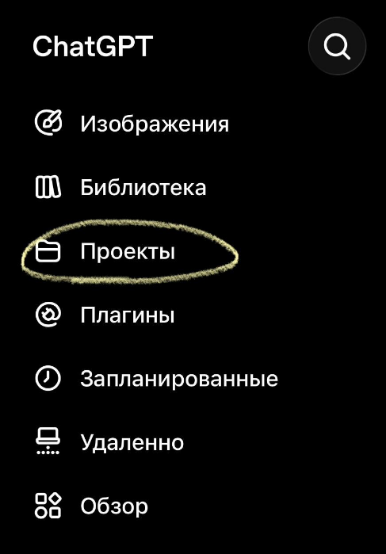
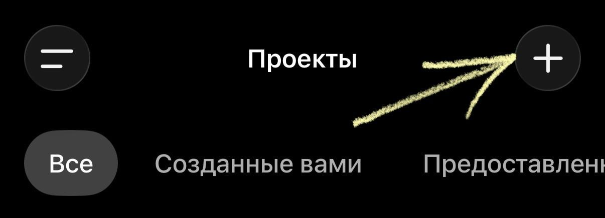
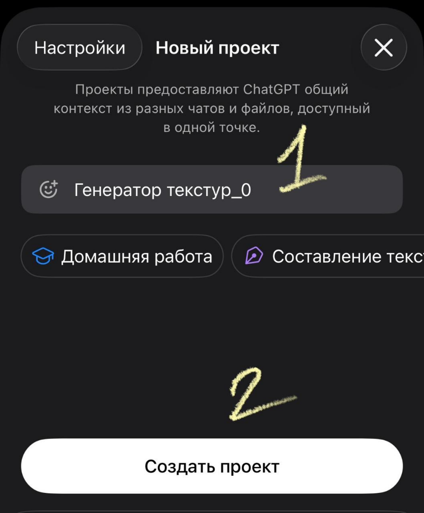
Шаг 2.
Вставь в «Инструкции проекта» текст из приложенного файла «Промт-инструкция к Проекту»
ОТКРЫТЬ ТЕКСТ ИНСТРУКЦИИ ↗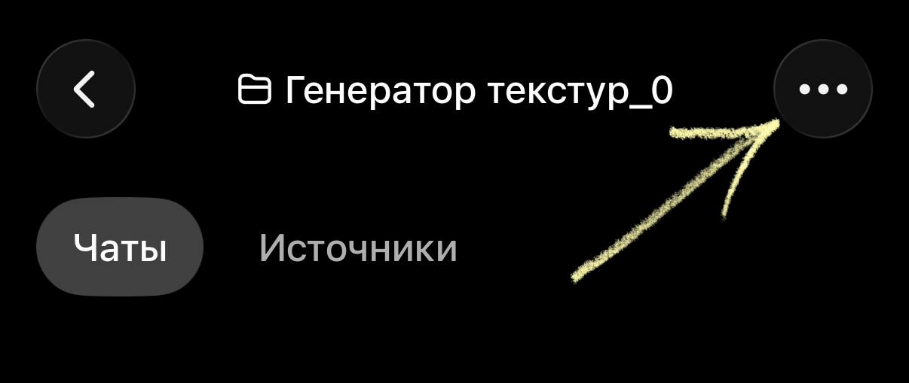
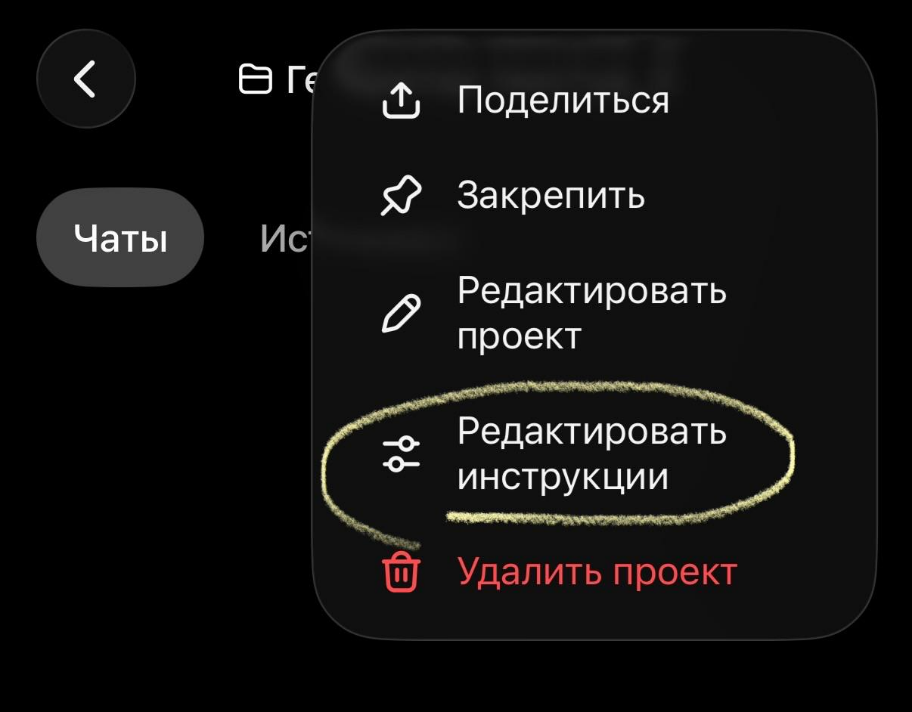
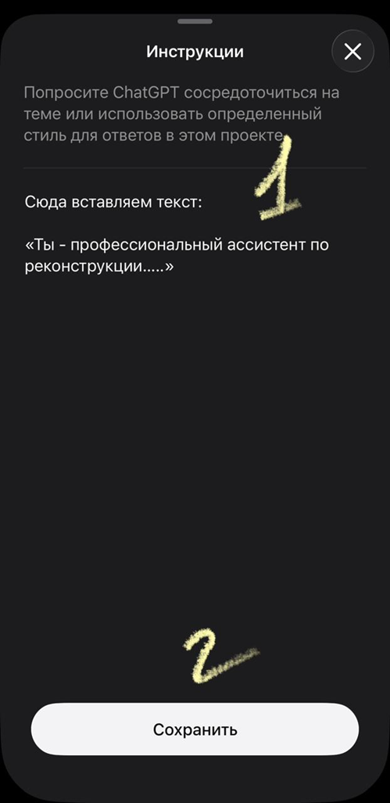
Шаг 3.
Можно переходить к созданию текстур
Теперь можешь создать новый чат или продолжить в этом же. Если создаешь новые чаты внутри этого Проекта, то никаких файлов/инструкций больше подгружать отдельно в каждый чат НЕ нужно, GPT автоматически найдет все приложенные инструкции и проанализирует их.
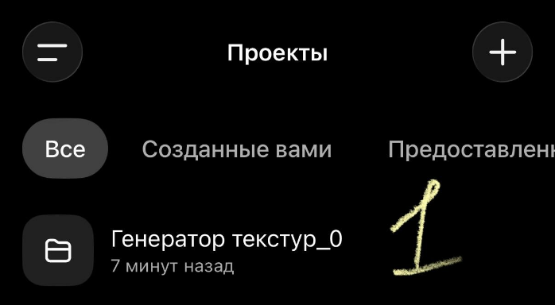
Прикладываешь референс материала и пишешь, какой конкретно материал нужен, например «Мрамор/камень на кухонной столешнице» и т.п.
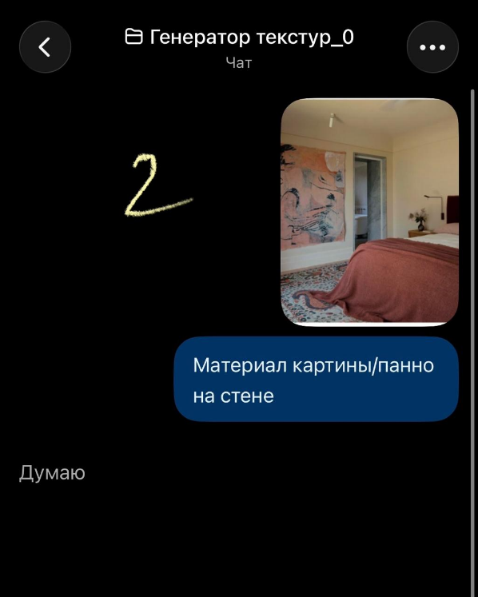
GPT присылает анализ материала и предлагает набор текстур
Ты можешь попросить дополнительные текстуры, если каких-то не хватает, например «Также приложи ч/б текстуру пыли/грязи, подходящую данному материалу» и т.д.
Либо можешь что-то спросить/уточнить дополнительно.
Если все устраивает, отправляешь ему запрос «Генерируй».
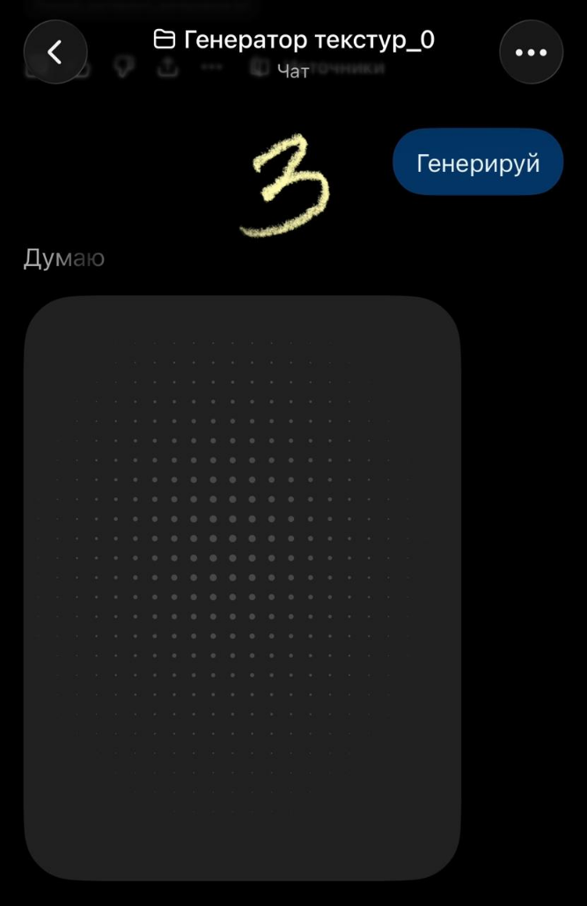
GPT подготавливает превью всех текстур (они в низком разрешении) и выдает их картинками, а также собирает готовый архив со всеми картами в разрешении 4К и краткую рекомендательную инструкцию по настройке простого варианта материала.
Если прислал только превью без архива, пишем запрос по типу «Собирай Архив с текстурами в разрешении 4К, приложи картинку с инструкцией по сборке материала в 3D макс».
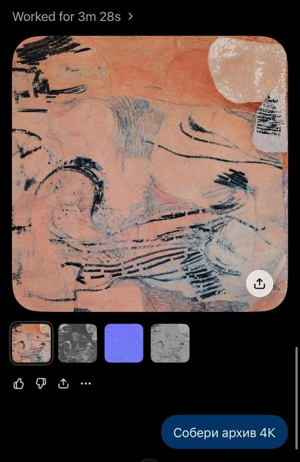
ВОЗМОЖНЫЕ ОШИБКИ И ИХ РЕШЕНИЕ
1. Появились только превью текстур, но архив не собрался
РЕШЕНИЕ: отправь запрос ➡️ Собери архив с текстурами в разрешении 4К и прикрепи его файлом. Также приложи картинку с инструкцией по сборке материала в 3D Max
2. Текстуры с плохой/нереалистичной детализацией и т.п.
РЕШЕНИЕ: отправь запрос ➡️ Переделай текстуры: сейчас детализация выглядит некачественно или нереалистично. Сделай фактуру более чёткой, естественной и физически правдоподобной, не меняя сам материал
3. Текстуры не похожи на референс
РЕШЕНИЕ: отправь запрос ➡️ Переделай текстуры, ориентируясь точнее на референс: сохрани его цвет, рисунок, фактуру и характер материала
4. У текстур слишком крупный или слишком мелкий масштаб
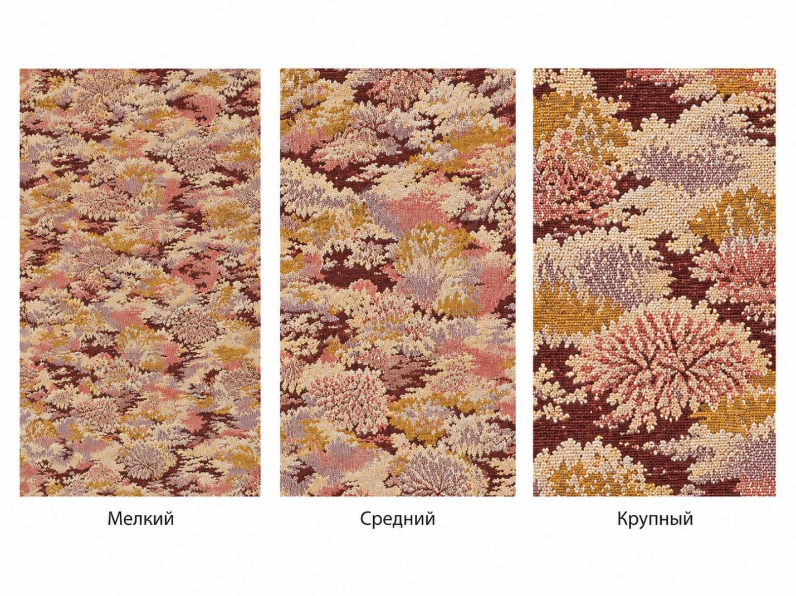
РЕШЕНИЕ:
- Если масштаб слишком крупный, отправь запрос ➡️Сделай рисунок/фактуру на текстурах мельче, остальные характеристики не меняй.
- Если слишком мелкий — отправь ➡️ Сделай рисунок/фактуру на текстурах крупнее, остальные характеристики не меняй
5. Ссылка на архив есть, но она не кликабельная
РЕШЕНИЕ: отправь запрос ➡️ Прикрепи архив повторно именно как кликабельный файл для скачивания, а не как текстовую ссылку
*ПАМЯТКА*
Помните: GPT иногда может ошибаться, пропускать шаги или не сразу корректно выполнять инструкцию — даже если она очень подробная. Если что-то пошло не так, просто укажите, что именно нужно исправить, и попросите повторить конкретный этап.
На 100% следовать каждому шагу НЕ обязательно. Вы можете использовать другие аналогичные формулировки и запросы — главное, чтобы смысл был понятен. Шаги здесь даны как основа и ориентир, чтобы было проще понять принцип работы и получить нужный результат. Удачных генераций!
Bazhena_Maximova @3d_atmospheric